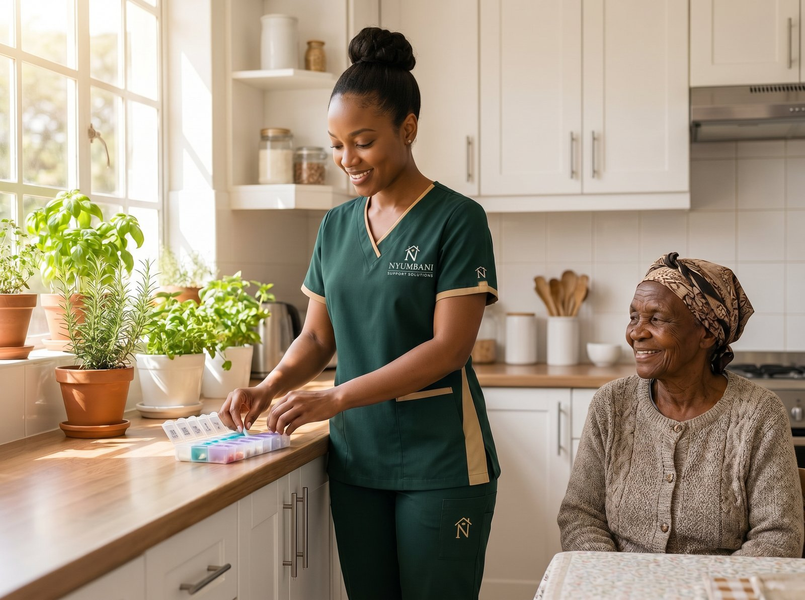

Clinical-quality nursing care, delivered in your home
When a loved one's medical situation requires more than a caregiver can provide, our NCK-registered nurses step in — bringing the assessments, procedures, and clinical judgment that complex in-home care demands.

Full-scope clinical nursing at home
Our skilled nursing service goes beyond observation — our nurses assess, intervene, document, and communicate with the broader care team.
NCK-Registered Nurse Assessments
Comprehensive clinical assessments by Nursing Council of Kenya registered nurses — establishing a baseline and identifying risks early.
Vitals Tracking & Documentation
Systematic monitoring of blood pressure, pulse, temperature, oxygen saturation, and blood glucose — documented and reported to the treating physician.
Wound Care
Sterile wound dressing, debridement support, infection surveillance, and care plan implementation — aligned with hospital wound management protocols.
Medication Coordination
IV and oral medication administration, dosing verification, adverse effect monitoring, and liaison with the prescribing physician for any adjustments needed.
Catheter & Tube Care
Urinary catheter care, nasogastric tube management, and ostomy care — delivered with clinical precision and patient dignity in mind.
Diabetes Monitoring & Provider Liaison
Blood glucose monitoring, insulin coordination, dietary guidance, and direct communication with the endocrinologist or general practitioner.
When skilled nursing oversight is needed
- Your loved one has complex, multi-drug medication regimens requiring professional management
- A surgical wound needs sterile, skilled dressing changes beyond a caregiver's scope
- A client has diabetes, hypertension, or heart failure requiring ongoing clinical monitoring
- A catheter, nasogastric tube, or stoma is in place and requires trained care
- The family wants a licensed clinician's eyes on a deteriorating or unpredictable condition
- Hospital providers recommended nursing follow-up as part of the discharge plan
Clinical oversight at home
Initial Clinical Assessment
An NCK nurse visits, reviews hospital records, and conducts a full assessment — identifying every clinical need and risk factor.
Nursing Care Plan
A structured clinical plan is developed — visit frequency, procedures required, monitoring parameters, and escalation criteria.
Consistent Nurse Visits
The same nurse manages the case — building familiarity with the patient's baseline and catching changes early.
Provider Liaison & Family Updates
Regular updates to the treating physician, specialist, and family — with rapid escalation if the patient's condition requires urgent review.
Clinical care your family can rely on
Speak with our care coordination team today. We'll review your loved one's medical situation and recommend the right nursing support plan — with no guesswork and no gaps in care.
Request a Nursing Assessment